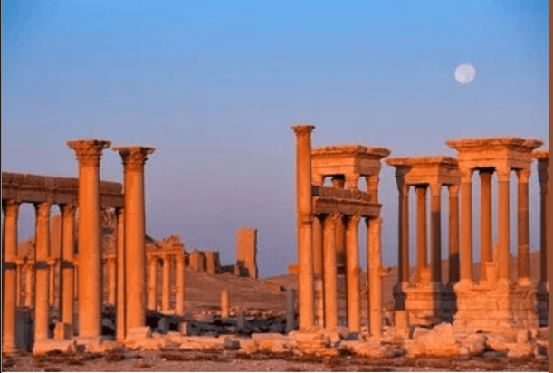
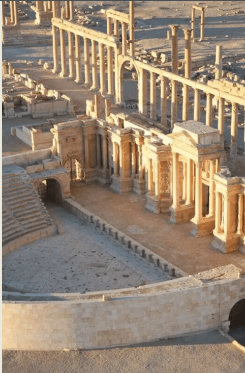

Palmyra Through the Lens
Visual documentation of Palmyra's ancient ruins — from its magnificent colonnades and Roman theatre to the devastating impact of conflict, captured through satellite imagery, ground-level photography, and preserved artifacts.

The Great Colonnade at Sunset
The iconic colonnaded street of Palmyra, stretching over 1 kilometer, bathed in golden light with the moon rising above the ancient ruins.

The Roman Theatre
An aerial perspective of the remarkably preserved Roman theatre, showcasing classical architectural mastery in the heart of the Syrian desert.

Temple of Bel — Then & Now
A powerful juxtaposition: a photograph of the Temple of Bel held against its current remains, documenting the devastating loss caused by conflict.

Satellite Evidence of Destruction
Satellite comparison of the Temple of Bel complex: September 2010 (intact) vs. August 2015 (destroyed), providing crucial documentation for heritage assessment.

The Lion of Al-lāt
The restored limestone sculpture of the Lion of Al-lāt, a 15-tonne Palmyrene artifact symbolizing protection, carefully reconstructed after being damaged during the conflict.